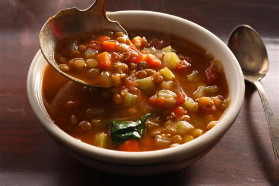

Home
Lentil Soup

Description
Lentil soup is a soup based on lentils which may be either vegitarian or include meat. It can be made with brown, red, yellow, green, or black lentils. Yellow and red lentils (Dehull) disintegrate in cooking, making a thick soup.
Lentil soup can be served as a side or as a main course. It can be served with crackers or hardy bread.
- 1 tablespoon olive oil
- 1 celery stalk
- 1 small onion
- 1 medium carrot
- 3 garlic cloves, minced
- kosher salt
- freshly ground black pepper
- 1 quart low sodium vegetable broth
- 15 oz diced tomatoes with juice
- 1 1/4 cups lentils, rinsed (do not rinse red lentils)
- 1 bay leaf
- 1/4 teaspoon fresh thyme leaves, chopped
- 1 teaspoonred wine
- 2 ounces spinach leaves
- 1 # of cubed serloin or ground beef
Steps
- In a large heavy bottomed pan heat olive oil to shimmering.
- Add garlic, onion, and black pepper. Sauté until onion is translucent.
- Sauté meat until brown.
- Add red wine.
- Salt and pepper to taste
- Add vegitable stock, bay leave, and tomatoes. Bring to roaling boil, decrease heat and simmer for and bring to a boil and cook for 40 minutes or until lentils are tender.